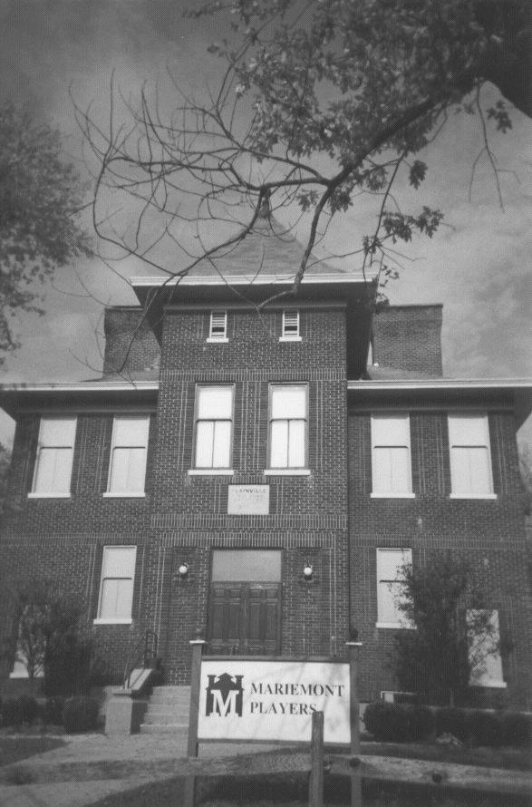

The Walton Creek Theater

The Walton Creek Theater in Mariemont, an old section of Cincinnati, is haunted by someone or something which doesn't like company. A sound crew employee was scared away by whispers telling him to get out, and many participants in plays there have felt the presence of something, especially in the basement. The building used to be a school, so maybe the ghosts are those of teachers or students; or maybe they're the ghosts of Indians buried close to the building--Indians have been sighted there more than once, only to dissipate like smoke when approached.
Back